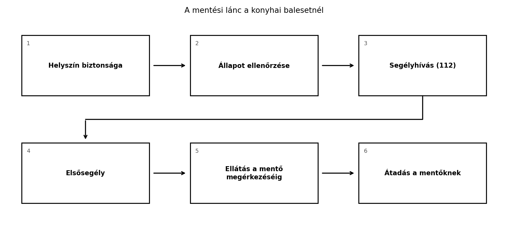

Egy reggeli előkészítés közben a kollégád felsikolt: megvágta a kezét, és patakzik a vér. Vagy épp egy forró leveses edény borul fel, és a konyhafőnök alkarja leforrázódik. Mindenki megdermed, te pedig nem tudod, mit csinálj először. A konyhában a balesetek gyorsan történnek, és a tálalás, a vendégek, a rendelések nem várhatnak. Ilyenkor az első percek döntenek: nemcsak a fájdalomról, hanem arról is, hogy a sérült kolléga maradandó károsodás nélkül felépül-e, vagy egy rossz mozdulat tovább rontja az állapotát. Ezért minden szakácsnak ismernie kell az alapvető elsősegélyt, és tudnia kell, mikor hívjon mentőt.
Ebben az alfejezetben lépésről lépésre megtanulod, hogyan mér fel és biztosít egy helyszínt, hogyan állít el vérzést, hűti le az égést és forrázást, mit tegyen fulladásnál, áramütésnél, valamint hogyan ismerd fel az életveszélyes allergiás reakciót, az anafilaxiát. A gyakorlatot mindig a magyarországi elsősegély-ajánlások szerint tanulod, és minden bizonytalan adatot jelölsz: a munkahelyen a kihelyezett elsősegélynyújtó utasítás és a munkáltató kockázatértékelése a mérvadó.
Képzeld el, hogy a konyhában a hűtőkamrából jössz ki, és a padlón meglátsz egy kiömlött olajat. A melletted álló kolléga megcsúszik, a kezéből kirepül a szakácskés, és az alkarján hosszú vágott seb keletkezik. A vér azonnal átitatja a kabátját. Te vagy a legközelebb. Mi a teendő? Először nem a sebet nézed, hanem a helyszínt: csúszós-e a padló, van-e még veszély, áram alatt van-e bármi, amihez hozzáérhet? Ezután következik a sérült állapotának gyors felmérése, a segélyhívás és a vérzéscsillapítás. Ezt a sorrendet nevezzük mentési láncnak.

A folyamatábra a mentési lánc hat, egymásra épülő lépését mutatja. A helyszín biztonságától indulunk, mert a sérült ellátása csak akkor kezdődhet, ha te magad is biztonságban vagy. Ha ketten vagytok, az egyik hív, a másik azonnal ellát. Ha egyedül vagy, a helyszín felmérése után hívd a 112-t kihangosítva, és közben kezdd az ellátást; erős vérzésnél a seb nyomását, félrenyelésnél a hátba csapást ne halaszd a hívás miatt (ellenőrizendő: OMSZ/ERC ajánlás).
Definíció. Az elsősegély az a halasztást nem tűrő, egyszerű beavatkozás, amelyet a baleset vagy hirtelen rosszullét helyszínén, a mentő megérkezéséig, szakképzettség nélkül is el lehet végezni. Célja az életveszély elhárítása, a további állapotromlás megelőzése és a szakszerű ellátás megkezdése.
Definíció. A mentési lánc azoknak a lépéseknek a rendezett sora, amelyek egy sérült vagy hirtelen rosszullétben lévő ember megmentéséhez szükségesek. Lépései: a helyszín biztonságának felmérése, a tudat és a légzés ellenőrzése, a segélyhívás, az alapvető elsősegély, valamint a folyamatos felügyelet és a mentő kiérkezéséig tartó ellátás.
Szabály. Mielőtt bármit tennél, mindig ellenőrizd a helyszínt: nincs-e törött üveg, forró folyadék, gázszag, égő zsiradék, szabadon futó víz vagy áram alatt lévő eszköz. Ha a helyszínt nem látod biztonságosnak, ne menj be, hanem riaszd a megfelelő szakembert. A konyhán a legjellemzőbb helyszíni veszélyek: csúszós padló, éles kések, forró edények, elektromos gépek.
Szabály. A magyarországi egységes segélyhívószám 112. Ezt a számot Európa-szerte használhatod. A konyhából céges telefonról, mobilról egyaránt hívható. A hívás ingyenes.
Jogszabály. A munkáltató köteles biztosítani a munkahelyen az elsősegélynyújtáshoz szükséges felszerelést és a kiképzett elsősegélynyújtó jelenlétét a munkavédelmi törvény és a vonatkozó rendeletek szerint (ellenőrizendő: munkavédelmi törvény elsősegélynyújtásra vonatkozó rendelkezései, valamint az ágazati előírások). A dolgozónak ismernie kell a munkahelyén kihelyezett elsősegélydoboz helyét, és be kell tartania a balesetek bejelentésére vonatkozó utasításokat.
Eljárás. Vágott sérülés, égés, áramütés és minden más konyhai baleset esetén az alábbi lépéseket kövesd:
Eljárás. A 112-es hívásnál a következőket mondd el, lehetőleg nyugodt, lassú beszéddel:
Megjegyzés. A segélyhívás során soha ne tegyük le a telefont addig, amíg a diszpécser nem mondja. A hívás rögzített, a mentésirányító ez alapján is felméri a helyzetet. A pontos cím létfontosságú: a mentő perceket veszíthet, ha a konyha csak „a sarki étterem”-ként van megadva.
Definíció. Vágott sérülés éles eszköz (kés, törött üveg, fém él) által ejtett seb, amely vérzést okoz. A konyhán a leggyakoribb balesetek egyike.
Eljárás. Vágott sérülés ellátása:
Figyelem. A sérült ujjáról, kezéről, csuklójáról a gyűrűt, karkötőt, órát azonnal vedd le, mert a duzzanat csökkenti a keringést, és a szorító ékszer elvághatja a vérellátást. Ha nem jön le, jelezd a mentőknek.
Az alábbi képsor a fenti eljárás kézmozdulatait mutatja: a kesztyűt (1. kocka, 2. lépés), a gézlapra helyezett tenyér egyenletes nyomását (2. kocka, 4. lépés), a megemelt végtagot ülő sérültnél (3. kocka, 5. lépés), a pólyát a gyűrű levétele után (4. kocka, 6. lépés) és az átvérzett kötésre tett új réteget (5. kocka, 7. lépés). A hatodik kocka a 3. lépés kivételét mutatja: a beszúródott tárgyat két oldalról párnázva rögzítjük.
A leggyakoribb hiba, hogy a segítő a nyomás közben „megnézi” a sebet, vagy leveszi az átvérzett kötést – mindkettő újraindítja a vérzést. Az elsősegély részleteit (a nyomás idejét is) az aktuális magyar elsősegély-ajánlás szerint ellenőrizni kell (ellenőrizendő: OMSZ / ERC irányelv). A HTML-kiadásban a kockák lépésenként, nagyítva nézhetők.
Higiénia. A vágott sérüléssel dolgozó kolléga nem térhet vissza a konyhai munkához, amíg a sebet szakszerűen le nem fedték, vízálló kötéssel, és a munkáltató utasítása szerint nem biztosított a higiénia. A nyílt seb élelmiszer-közelben fertőzésveszélyt jelent, ezért a sebesült dolgozó ideiglenesen más, élelmiszert nem érintő munkakört kaphat, vagy haza kell küldeni.
Definíció. Égés hőhatásra, forrázás forró folyadék vagy gőz által okozott szöveti sérülés. A konyhán leggyakoribbak a forró olajos, vízgőzös és edényfogó nélküli megfogás okozta sérülések.
Eljárás. Égés és forrázás ellátása:
Szabály. Forró zsiradék égésénél a víz hűtésére használandó, de a zsírtüzet vízzel oltani tilos. Az égő olajra soha ne önts vizet, mert a víz hirtelen gőzzé alakul, és szétrobbanthatja a zsiradékot. A tűzoltás módját a Tűzvédelem a konyhán alfejezetben tanultad; itt a zsiradéktűz okozta égési sérülést hűtéssel és szakszerű fedéssel látjuk el.
Higiénia. Az égés után a dolgozó nem végezhet élelmiszerrel közvetlenül érintkező munkát, amíg a sebet szakszerűen le nem fedték, és a munkáltató nem ellenőrizte. A nyílt égési seb a szennyeződött konyhai környezetben elfertőződhet, és a sérült sem tud megfelelően dolgozni.
Definíció. Félrenyelés (idegentest a légútban) akkor következik be, ha egy falat étel, csontdarab vagy apró tárgy a légcsőbe kerül, és részben vagy teljesen elzárja a légutat. A konyhán és a vendégtérben is előfordulhat.
Eljárás. Felnőtt, eszméleténél lévő sérült félrenyelésének ellátása:
Az alábbi ábra a két fogás testhelyzetét és kéztartását mutatja. A 2. képen a sérült erősen előredől – így a kimozduló falat a szája felé esik, nem lejjebb –, a segítő egyik keze a mellkasát támasztja. A 3. képen a segítő mögötte áll, az ökle a jobb szélső kis képen látható helyen van, a nyíl a lökés irányát (befelé és felfelé) jelzi.
Tipikus hiba, hogy az ököl túl magasra, a szegycsontra kerül – ez bordasérülést okozhat, és hatástalan. A fogásokat csak bábun, oktatóval gyakorold, egymáson soha. A protokoll az ERC aktuális irányelve szerint ellenőrizendő. A HTML-kiadásban lépésenként, az ököl helyét nagyítva is megnézheted.
Megjegyzés. Várandós embernél vagy nagy haskörfogatú sérültnél a hasi lökést tilos alkalmazni; helyette a szegycsont alsó harmadára mért 5 mellkasi lökés javasolt. Ezt a módszert csak akkor alkalmazd, ha biztos vagy benne, és ha a sérült jelzi vagy látod, hogy várandós. A mentő diszpécsere telefonon is utasítást adhat.
Figyelem. Ha a sérült levegőt kap, de sípol, gyanítható, hogy az idegentest mélyebben van. Ilyenkor is mentőt kell hívni, és nem szabad a sérültet egyedül hagyni. A hátba csapást és hasi lökést ne alkalmazd, ha a sérült erősen köhög, mert az ronthat a helyzeten.
Definíció. Áramütés akkor következik be, ha az emberi test elektromos áramkör részévé válik. A konyhán a hibás szigetelésű gép, a vizes kézzel érintett kapcsoló, a sérült hosszabbító vagy a sérült csatlakozó okozhat ilyet.
Eljárás. Áramütött sérült ellátása:
Tilos. Áramütött emberhez puszta kézzel hozzányúlni, amíg az áramkör meg nem szakadt. Tilos a fémtárgyakkal, nedves eszközökkel való beavatkozás. Tilos a vízzel oltás elektromos tűznél, mert a víz vezeti az áramot.
Szabály. A gép áramtalanítása és a javítás elvégzése előtt a konyhai gépet mindig ki kell húzni a konnektorból, a biztosítékot le kell csapni, és a főkapcsolót meg kell jelölni, hogy más ne kapcsolhassa vissza. Ezt a munkavédelmi oktatás során tanultad, de az áramütés ellátásánál is elengedhetetlen.
Definíció. Allergiás reakció az immunrendszer túlzott válasza egy ártalmatlan anyagra, például ételre, gyógyszerre vagy rovarcsípésre. Anafilaxia az allergiás reakció életveszélyes, gyorsan kialakuló formája, amely az egész szervezetet érinti.
Figyelem. A konyhán a vendég vagy a kolléga bármikor kaphat anafilaxiás reakciót egy rejtett allergéntől – például földimogyoró-olajtól, hal- vagy tojásfehérjétől. A jeleket azonnal fel kell ismerni, mert percek alatt halálos állapot alakulhat ki.
Eljárás. Anafilaxia felismerése és ellátása:
Továbbvitt eredmény. Az anafilaxia felismerését és a segélyhívást itt tanultad meg. Ezt az ismeretet az A 14 fő allergén, az ételallergia és az intolerancia alfejezetben használjuk fel, ahol az allergén jelölés és a vendég tájékoztatása kerül elő. Ott azt is megtanulod, hogyan előzd meg, hogy a rejtett allergén anafilaxiát váltson ki.
Allergén. Az anafilaxiát kiváltó leggyakoribb élelmiszerek a 14 fő allergének közül kerülnek ki: tojás, tej, hal, földimogyoró, diófélék, rákfélék, puhatestűek, szójabab, szezámmag, zeller, mustár, glutént tartalmazó gabonafélék, csillagfürt, valamint kén-dioxid és szulfitok. A konyhán ezeknek a keresztszennyeződése is kiválthatja a reakciót, ezért az elkülönített munkavégzés és a pontos tájékoztatás létfontosságú.
Cél. A tanuló gyakorolja a helyszínbiztosítást, a 112-es segélyhívás tartalmának elmondását, a vágott sérülés vérzéscsillapítását és az anafilaxia felismerését.
Eszközök és anyagok. Elsősegélydoboz (gumikesztyű, steril gézlap, ragtapasz, rugalmas pólya, tiszta műanyag lap), életnagyságú bábu vagy szereplő partner, képkártyák a tünetekről, telefon (kikapcsolt, gyakorló módban).
Biztonsági korlát. Ezt a gyakorlatot éles eszközök, forró tárgyak, valódi vér és valódi gyógyszer nélkül végezd. A hátba csapást és hasi lökést bábun vagy párnán gyakorold, élő emberen soha ne alkalmazd erőből. A gyakorlat során a hívás csak szimulált, a 112-t ténylegesen nem hívhatod fel.
Higiéniai előkészület. A gyakorlat előtt moss kezet, és a bábut tiszta felületre helyezd. A gumikesztyű felvételét is gyakorold.
Lépések:
Ellenőrzési pontok. A gyakorlat során ellenőrizd: a helyszínt tényleg felmérte-e; a segélyhívásban szerepel-e a pontos cím; a seb nyomása folyamatos-e; az anafilaxiás betegnél a lábemelés megtörtént-e; a mentőhívás nem maradt-e el.
Az elsősegélynyújtás minősége a konyhában akkor megfelelő, ha:
| Hiba | Ok | Helyes gyakorlat |
|---|---|---|
| Az égést jeges vízzel vagy jéggel hűtik. | A jég érszűkületet okoz, és további szövetkárosodást. | Folyó, hűvös (nem jeges) víz alatt 10-20 percig hűteni (ellenőrizendő). |
| A vágott sebnél a kötést leveszik, hogy megnézzék, áll-e a vérzés. | A lenyomott géz elmozdul, az alvadt vér felszakad, a vérzés újra indul. | A nyomást folyamatosan tartani, a kötést nem levenni, rátenni újabb réteget. |
| A zsiradéktüzet vízzel oltják, majd az égő olajos sérültet vajjal kenik be. | A víz a forró zsírral robbanást okoz, a vaj pedig fertőzést és hőszigetelést. | A zsiradéktüzet oltótakaróval vagy F osztályú tűzoltó készülékkel oltani, az égést tiszta vízzel hűteni, steril lappal fedni. |
| Áramütött embert puszta kézzel próbálják elrántani a géptől. | Az emberi test vezeti az áramot, így az elsősegélynyújtó is áramütést szenved. | Előbb áramtalanítani, szigetelt eszközzel beavatkozni, vagy mentőt hívni. |
| Anafilaxiánál a beteget felültetik, és vizet adnak neki. | A vérnyomásesés miatt az ülő testhelyzet csökkenti az agyi vérellátást; az ivás nyelészavart okozhat. | Ha a légzés engedi, hanyatt fektetni, lábakat felpolcolni, szájon át nem adni semmit. |
| A hátba csapást erős köhögésnél alkalmazzák. | A felesleges beavatkozás ronthatja a légúti akadályt. | Köhögésre biztatni; a beavatkozást csak akkor kezdeni, ha a sérült nem tud köhögni vagy beszélni. |
Alkalmazás. Egy forgalmas étterem szombati ebédidején a salátás állomás mellett dolgozó séf észrevette, hogy a fiatal commis (szakácssegéd) halkan nyöszörög, és a torkához kap. A fiú az előző nap óta enyhén náthás volt, de dolgozni jött. A séf odalépett hozzá, és látta, hogy az arca kipirult, az ajka duzzadni kezd, és sípolva veszi a levegőt. A fiú korábban mondta, hogy földimogyoró-allergiás, de a salátaöntetnél használt pörkölt földimogyoró-olaj nem volt feltüntetve a receptben. A séf nem pánikolt: azonnal félig ülő helyzetben tartotta a fiút, odahívta a másik kollégát, hogy hívjon mentőt, majd megkérdezte a beteget, van-e adrenalin-injektora. A fiú a táskájából elővett egy EpiPent. A séf a fiú combjához segítette az injektort, amíg a fiú maga nyomta meg, majd amikor a fiú szédülni kezdett és a légzése javult, lefektette, és a lábait felpolcolta egy üres láda segítségével. A mentő 8 perc múlva megérkezett, a fiú állapota stabilizálódott. Este a séf kiíratta az étlapra: „Ez az étel földimogyoró-olajjal készül.” A baleset tanulsága: a pontos allergéntájékoztatás és az anafilaxia gyors felismerése életet mentett.
1. feladat (A). Magyarázd el, miért kell a mentési láncban előbb a helyszínt biztosítani, mint a sérült ellátását. Adj egy konkrét konyhai példát.
2. feladat (A). Gyakorold a 112-es hívás szövegét. Írd le szóról szóra, mit mondanál egy forró olajos forrázás esetén, ha a konyha a „Fakanál Étterem, III. kerület, Lajos u. 7.” címen található.
3. feladat (B). Rendezd sorba az égési sérülés ellátásának lépéseit, és írd mellé az okát is: a hólyagot nem nyúljuk; levesszük az ékszert; folyó hűvös víz alá tartjuk; steril lappal fedjük.
4. feladat (B). A munkahelyen ki van függesztve egy elsősegély-utalvány. Mi hiányzik belőle? „Vágásnál: nyomd, emeld, kötözd.” Javítsd ki a szöveget a tanult lépések alapján.
5. feladat (C). Egy vendég földimogyoró-allergiás, és a desszertben nem jelzett földimogyoró-krém volt. A vendégnél hirtelen ajakduzzanat, sípoló légzés és szédülés jelentkezik. Sorold fel a felismerés és a teendők minden lépését. Melyik gyógyszert használhatja, ha van nála, és ki adhatja be?
6. feladat (D). A gyakorlati munkalap után elemezd a hibát: a tanuló a vágott seb ellátásakor levette a véres gézt, mert meg akarta nézni, áll-e a vérzés. Miért hibás ez? Mi lett volna a helyes? Mi a kapcsolat a helytelen nyomástartással és a fertőzésveszéllyel a konyhán?
1. feladat. A helyszínbiztosítás azért előzi meg a sérült ellátását, mert ha maga az elsősegélynyújtó is balesetet szenved, nem tud segíteni, és eggyel több sérült lesz. Konyhai példa: egy vágott sérülés a padlón kiömlött olaj mellett történt. Ha nem töröljük fel vagy jelöljük meg a csúszós részt, a segítségnyújtás közben eleshetünk, és a kés további sérülést okozhat.
2. feladat. „Jó napot kívánok! Kiss Péter vagyok, a Fakanál Étterem szakácsa. A III. kerület, Lajos utca 7. szám alatt, az étterem konyhájában forró olajjal leforrázott egy dolgozó alkarja. Egy sérült van, az alkar bőre vörös, hólyagos, a sérült ébren van, de nagyon fáj. Az égett testrészt folyó hűvös víz alá tartottuk. Kérem, küldjenek mentőt.” (A pontos utca és házszám, a sérülés módja, a hűtés elkezdése mind szerepel.)
3. feladat. Helyes sorrend: (1) Folyó hűvös víz alá tartjuk – ok: megállítja a mélyebb hőkárosodást és csillapítja a fájdalmat. (2) Levesszük az ékszert – ok: a duzzanat miatt a gyűrű, óra elvághatja a keringést. (3) A hólyagot nem nyúljuk – ok: a hólyag fala véd a fertőzéstől. (4) Steril lappal fedjük – ok: megakadályozza a szennyeződést, és nem tapad bele a sebbe.
4. feladat. A helyes leírás: „Vágásnál: győződj meg a helyszínről, vegyél gumikesztyűt, helyezz steril gézt a sebre, nyomd folyamatosan 10 percig, emeld a végtagot a szív szintje fölé, rögzítsd a kötést, erős vérzésnél hívj mentőt.” A hiányzó lépések: helyszínbiztosítás, gumikesztyű, folyamatos nyomás, emelés, rögzítés.
5. feladat. Anafilaxia jelei: hirtelen ajakduzzanat, sípoló légzés, szédülés (plusz bőrtünetek, vérnyomásesés). Teendők: azonnal 112; kérdezzük meg, van-e adrenalin-autoinjektora; ha van, hozzuk el, és ha a beteg nem képes rá, a segítő a használati utasítás szerint beadhatja a beteg saját injektorát (ellenőrizendő: aktuális OMSZ / ERC ajánlás és a munkáltatói elsősegély-utasítás); fektessük le, lábait felpolcoljuk, ha a légzés engedi; szájon át ne adjunk semmit; figyeljük a légzést; ha szükséges, CPR. A gyógyszer az adrenalin (pl. EpiPen). A mogyoró (diófélék) és a földimogyoró két külön allergén a 14 közül; a jelölésnél nem cserélhetők fel. Ezt az ismeretet az A 14 fő allergén, az ételallergia és az intolerancia alfejezetben használjuk a pontos allergéntájékoztatáshoz.
6. feladat. A tanuló hibája: levette a véres gézt. Ezzel megszakította a folyamatos nyomást, a véralvadék felszakadt, és a vérzés újraindult. A helyes: nem levenni, hanem újabb gézt tenni rá, és folytatni a nyomást. A fertőzésveszély: a visszatérő vérzés miatt a seb nyitva marad, a konyhában lévő baktériumok (pl. nyers hús leve) bejuthatnak, és a dolgozó sebe elfertőződik, ráadásul a sebes kézzel nem dolgozhat élelmiszer közelében. A folyamatos nyomás tehát nemcsak a vérzéscsillapítás, hanem a higiénia és a munkaképesség megőrzése miatt is fontos.
Az elsősegély a konyhán a mentési lánccal kezdődik: helyszínbiztosítás, tudat- és légzésellenőrzés, segélyhívás a 112-es számon, majd a sérülésspecifikus ellátás. Vágott sérülésnél a közvetlen nyomás, a végtag felpolcolása és a steril fedés állítja el a vérzést; az átvérzett kötést tilos levenni. Égésnél és forrázásnál a folyó hűvös víz alatti 10-20 perces hűtés az első teendő, a jeget és a hólyag kilyukasztását kerülni kell. Fulladásnál 5 hátba csapás és 5 hasi lökés váltakozik, erős köhögésnél nem avatkozunk be; várandósnál hasi lökés helyett mellkasi lökés. Áramütésnél előbb áramtalanítani kell, puszta kézzel tilos a sérülthöz érni. Az anafilaxiát a több szervrendszert érintő gyors tünetek jelzik; azonnal mentőt kell hívni, a beteg saját adrenalin-autoinjektorát lehet beadni, a beteget lefektetni, lábát felpolcolni. Továbbvitt eredmény. Az anafilaxia felismerése és a segélyhívás az A 14 fő allergén, az ételallergia és az intolerancia alfejezetben az allergén tájékoztatásnál kerül alkalmazásra. A munkahelyen a kihelyezett elsősegélydoboz és a munkáltatói kockázatértékelés a mérvadó, az aktuális elsősegély-ajánlásokat ellenőrizni kell.